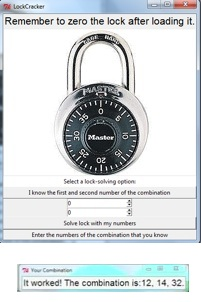
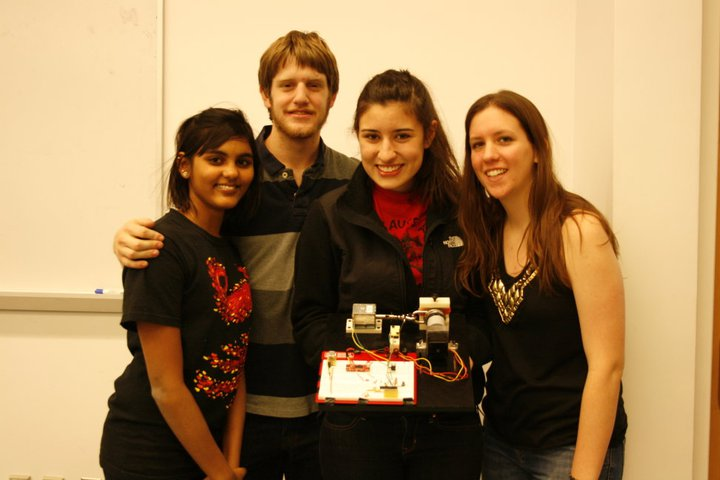

Lockcracker : A mechatronic system
Our youtube video has over 100,000 views

The Context
The purpose of this project was to get a multi-disciplinary introduction to the principles of engineering. The class is taken in sophomore year and a team of mechanical, electrical, and computer engineers is tasked with making a mechatronic device with a PIC microcontroller. Team JARJ decided to build a lock-cracking device.
More about the project here.
The Project
The LockCracker can take a combination lock (used on high school lockers) with an unknown combination and unlock it in less than 3 hours. The combination is displayed on a GUI on a laptop.
Team JARJ figured out a mechatronic system that could mecahnical turn the lock dial, try the minimum necessary combinations, and pull the latch at the correct combination.
Process
The system is started from a GUI that lets a user input any of the numbers in the combination that they already know (the algorithm differs based on that).

The lock dial is spun in the 3 directions needed to open a lock and every combination is tried in brute-force fashion. With each new combination, the lock latch is pulled. When the latch finally opens, the system stops and displays the final combination to the user. Please watch this video of the LockCracker in action.
Our team divided up the work into 3 parts - a mechanical system, an electrical system, and a software system. The following describes what components and actions are on the prototype
- Stepper motor: to turn the lock dial
- Pull-in solenoid: Pull the lock's latch every time a combination is tried;
- Limit switch: to trigger only when the latch is opened, telling the system to stop trying further combinations and display the final combination to the user;
- PIC microcontroller: brains behind the controls of the other components (when to turn dial, when to pull the latch, etc.);
- Python GUI - Allow the user to start the LockCracker, to display end result;
- Python back-end- change strategy based on how many numbers the user already knows, modular to fit any type of lock dial.
More about the project here.
The Reflection
This was the first multi-dimensional project I worked on, with engineers from other disciplines - computer science, and mechanical engineering. We learned a lot about project planning, coordination, and team work to pull off a scoped project in a limited number of weeks.
The LockCracker has recieved publicity in technology media including Wired.com, Popsci.com, Hackaday.com, ASME Magazine, and more. Our team is very proud of our work together. A group picture of Team JARJ is below.
